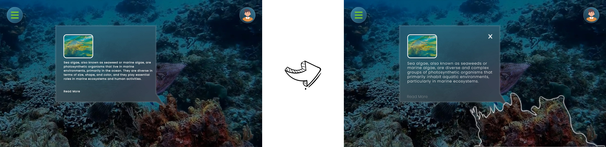
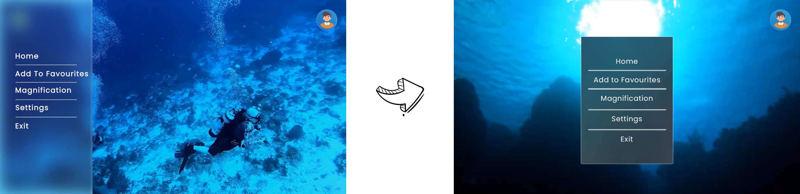
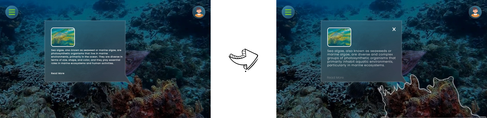
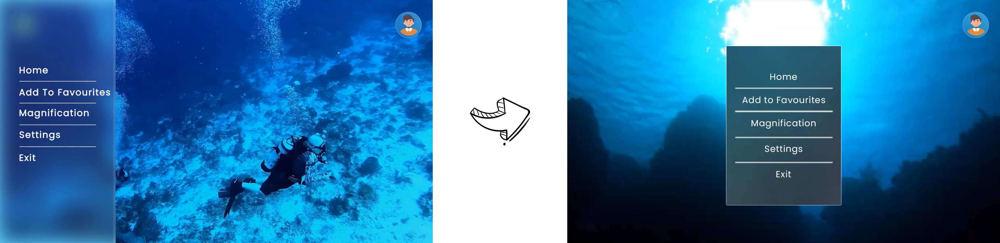

"Verdura" is an innovative Virtual Reality (VR) learning platform designed to bridge the gap between users and the plant world. This immersive application transforms plant science education into an engaging adventure, addressing the widespread issue of plant blindness and lack of botanical knowledge.
Traditional educational systems often overlook the importance of plant sciences, leading to a significant knowledge gap in this field. This is evidenced by alarming statistics:
This lack of engagement with plant sciences has far-reaching implications for sustainability, ecological understanding, and environmental conservation.
Verdura is an immersive VR learning environment to students which offers them:
By leveraging VR technology, Verdura creates a captivating and interactive platform that inspires users to connect with the plant world in ways traditional methods cannot achieve.
To understand the existing challenges in plant education and the phenomenon of plant blindness a liteature analysis was conducted which indicated a significant decline in interest in botany among students, with statistics showing that only 1 in 185 bioscience graduates specialized in botanical sciences. Historical critiques highlighted the oversimplification of botany in educational settings, further emphasizing the need for innovative teaching methods.
To evaluate existing plant-related applications and identify gaps in their offerings a SWOT analysis on popular apps like Candide Labels, PictureThis, Planta, and PlantNet.From this analysis it has been identified that strengths such as augmented reality features but noted weaknesses like limited educational content. Opportunities for improvement included integrating more gamification and user-friendly features.

After analyzing the competetive apps, an initial hypothesis was fixed focusing on a new botany learning method for students, positing that an engaging VR platform could enhance learning experiences.
A online Survey was conducted between 11 individuals aged 13-33 (4 male, 7 female) to gather quantitative data to know their user preferences. From which it has been found out that 2 out of 3 of respondents preferred educational content over entertainment.
After Conducting the online surveys, individual interviews were conducted with 4 Botany BA students and aldo group interviews were held with students from India (age range 22-25), focusing on their expectations from a botanical app and to to gather qualitative insights about their needs and experiences with existing botanical applications.
After the data collection, snowball sampling and quota-based opportunity sampling were used to ensure diverse participant backgrounds. This approach helped capture a wide array of perspectives from both students and educators.
The key findings from Sampling method are:
Based on the Data which is collected Personas & Scenarios were developed to understand the diverse needs of potential users. These personas included Dave, an 18-year-old botany student eager to explore plant science and Julia, a 28-year-old high school biology teacher passionate about integrating technology into her teaching.


Verdura prioritized selecting a VR headset that could deliver an exceptional user experience while considering factors like accessibility, target audience, and content compatibility. Here's a breakdown of the VR headsets explored during the research phase:
From all thesd considerations Oculus Quest 2 was selcted to be best performing VR tool for Verdura
To get an engaging VR experience allows you to explore the wonders of the coral reef at your own pace, fostering a deeper understanding and appreciation for this vital ecosystem, the low-fidelity phase involved creating a paper prototype for the application. This prototype outlined the basic structure, user interface, and key features. The initial design focused on touch to learn, zoom in, zoom out and interactive bubbles. This phase allowed for quick iterations and adjustments based on feedback.
The high-fidelity prototype evolved from the low-fidelity version, incorporating detailed design elements, color schemes, and user interface refinements. The design adhered to inclusive principles, ensuring that each feature was carefully implemented to cater to user needs.


A semi-structured interview process with 8 participants (aged 14-45) explored user experience with a VR botany prototype. Participants were a mix of genders (3 male, 5 female) and all had prior VR experience.
Methodology:
Key Findings:
Additional Feedback:
Overall, the user testing yielded valuable insights to refine the VR botany prototype. Addressing visual clarity, information presentation speed, and user interface elements will be crucial in creating a more engaging and effective learning experience.
The high-fidelity prototype evolved from the low-fidelity version, incorporating detailed design elements, color schemes, and user interface refinements. The design adhered to inclusive principles, ensuring that each feature was carefully implemented to cater to user needs.
 


